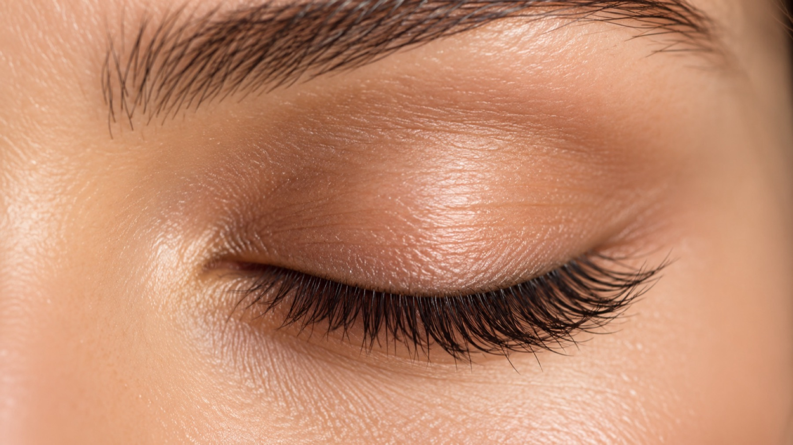

Jede Wimper mit Sorgfalt.
Korean Lash Lifting und Wimpernlifting im Studio in Dachau.

Signature Looks
Leistungen
Korean Lash Lifting
Natürlich geschwungene, definierte Wimpern: Ihre eigenen Wimpern werden in Form gebracht und ausdrucksvoll betont.
- Ihre eigenen Wimpern, keine Verlängerung
- Ein offener, wacher Blick im Alltag
Wimpernlifting
Das Wimpernlifting schwingt Ihre Wimpern sanft nach oben und lässt sie länger und dichter wirken, ganz ohne tägliches Zangen oder Tuschen.
- Sichtbar geschwungener Wimpernkranz
- Passend zu Ihrer Augenform abgestimmt
Über Aaliyah Albasan
Präzision ist Handwerk
Wimpern, Beauty, Leidenschaft: Das ist der Anspruch von A’LASH. Aaliyah Albasan arbeitet mit ruhiger Hand und achtet auf Symmetrie und Details, damit das Ergebnis zu Ihrem Gesicht passt.
Wir nehmen uns Zeit für Ihre Wünsche und erklären jeden Schritt, damit Sie sich wohlfühlen.
A’LASH by Aaliyah Albasan
Am Kräutergarten 17, 85221 Dachau
Ablauf
Ihr Termin in drei Schritten
Beratung
Wir besprechen Ihre Wünsche, schauen uns Ihre Wimpern an und wählen die passende Behandlung.
Behandlung
Sie liegen bequem, wir arbeiten konzentriert und Schritt für Schritt.
Pflegehinweise
Zum Schluss erhalten Sie Tipps, wie Sie Ihr Ergebnis in den ersten Tagen schonen.
Pflege
Die ersten 24 Stunden
- Wimpern trocken halten: kein Duschdampf, keine Sauna, kein Schwimmen.
- Nicht reiben und nicht mit den Fingern an den Wimpern zupfen.
- Keine öl- oder fetthaltige Pflege im Augenbereich verwenden.
- Bei Unsicherheit melden Sie sich gern bei uns.
Häufige Fragen
Wie bereite ich mich vor?
Kommen Sie am besten ungeschminkt zum Termin und verzichten Sie auf Wimperntusche und Wimpernzange. Kontaktlinsen nehmen Sie vor der Behandlung heraus.
Wie lange dauert die Behandlung?
Das hängt von der Behandlung und Ihren Wimpern ab. Wir planen ausreichend Zeit ein, damit nichts hektisch wird. Die genaue Dauer sehen Sie bei der Online-Buchung.
Was muss ich nach der Behandlung beachten?
In den ersten 24 Stunden sollten Wimpern nicht nass werden und nicht mit Öl oder fettender Pflege in Berührung kommen. Alles Weitere erhalten Sie nach der Behandlung persönlich.
Was, wenn ich meinen Termin nicht wahrnehmen kann?
Bitte sagen Sie Ihren Termin so früh wie möglich ab, per Telefon oder Instagram-Nachricht. Dann kann der Platz neu vergeben werden.
Kontakt & Anfahrt
A’LASH by Aaliyah AlbasanAm Kräutergarten 17
85221 Dachau